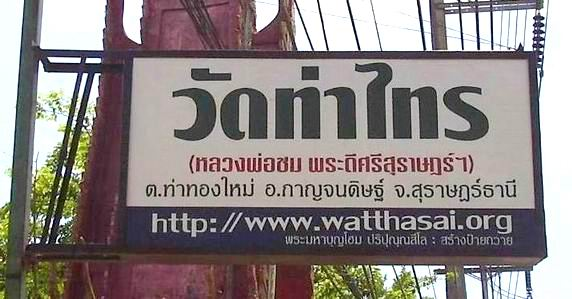
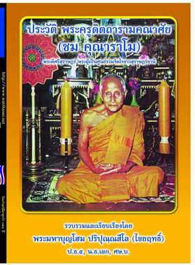

|
สถานะเดิม
ชื่อ
ชม นามสกุล ทวดสิญจน์ เกิดเมื่อวันจันทร์ แรม ๑๐ ค่ำ เดือน ๑๐ ปี ระกา
ตรงกับวันที่ ๒๐ กันยายน ๒๔๔๐ ที่ บ้านนาดอน (ใกล้บ้านหัวหมาก) หมู่ที่
๔ ตำบลช้างขวา อำเภอกาญจนดิษฐ์ จังหวัดสุราษฎร์ธานี บิดาชื่อ นายพุ่ม
ทวดสิญจน์ (บ้านเดิมอยู่ที่บ้านวังไทร หลังแต่งงานแล้วได้ย้ายไปอยู่กับภรรยาและประกอบอาชีพที่บ้านนาดอน)
มารดาชื่อ นางพัน ทวดสิญจน์ (บ้านเดิมอยู่ที่ บ้านนาดอน) อาชีพบิดามารดา
ทำนา-ทำสวน มีพี่น้องร่วมมารดาบิดา ๔ คนตามลำดับดังนี้.-
๑.
นางเคลือบ ทวดสิญจน์ (ถึงแก่กรรมแล้ว) สมรสกับ โกถิ่ว มีธิดาด้วยกัน
๑ คน ได้แก่ นางยี่ไล้ เสียชีวิตเมื่อายุประมาณ ๓๐ เศษ ๆ (เสียชีวิตเป็นคนแรก)
๒.
พระครูดิตถารามคณาศัย (ชม คุณาราโม) (เสียชีวิตเป็นคนที่ ๓ )
๓.
นางแฉ้ เพชรกลับ (ถึงแก่กรรมแล้ว) สมรสกับ นายสึก เพชรกลับ มีบุตร-ธิดาด้วยกัน
๘ คน ได้แก่ ๑.นายนิพนธ์ เพชรกลับ, (อาชีพ ขรก.กรมสรรพสามิต) ๒.นายพริ้ง
เพชรกลับ, ๓.นายผวน เพชรกลับ (อาชีพ ขรก.ครู), ๔.นายหนูกลาง หรือแดง
เพชรกลับ (เสียชีวิตตั้งแต่วัยหนุ่ม), ๕.นายยุคล เพชรกลับ(อาชีพ ขรก.ครู),
๖.นายสุมล เพชรกลับ อาชีพทำสวน , (นายยุคล กับ นายสุมล เป็นคู่แฝด),
๗.นางนงเยาว์ วงศ์สุวรรณ, ๘.นางประยูร สอนขำ
๔.
นายขาบ ทวดสิญจน์ ได้อยู่กินกับ นางพับ มีสุวรรณ มีธิดาด้วยกัน
๑ คน ชื่อ นางบุญทิ้ง ทวดสิญจน์ (เพชรศรี) ชาวตำบลทุ่งกง แล้วได้อพยพไปอยู่ที่ตำบลดอนสัก
อำเภอดอนสัก หลังจากเกิดธิดาแล้ว ได้แยกทางกัน หลวงพ่อชมจึงตั้งชื่อให้หลานว่า
"บุญทิ้ง" (นางบุญทิ้ง สมรสกับ นายเซี้ยง เพชรศรี
มีบุตร-ธิดา ด้วยกัน ๙ คน ได้แก่ ๑.นายวิเศษ เพชรศรี (ถึงแก่กรรม)
๒.นายถาวร เพชรศรี ๓.น.ส.รัชนา เพชรศรี ๔.นายวันชัย เพชรศรี ๕.น.ส.วรรณี
เพชรศรี ๖.นางฉวีวรรณ พรหมทอง ๗.นายวิเศษ เพชรศรี (ถึงแก่กรรม) ๘.น.ส.จันทรา
เพชรศรี ๙.นายวิวัฒน์ เพชรศรี) (ได้รับข้อมูลนี้จาก นางฉวีวรรณ พรหมทอง
ร้านอาหารป้าทิ้ง อ.ดอนสัก เมื่อวันที่ ๒๙ กรกฎาคม ๒๕๕๔ เวลา ๑๓.๔๐
น.)
หลังจากที่แยกทางกันกับนางพับแล้ว
นายขาบ ทวดสิญจน์ ได้สมรสกับ นางเนย มีบุตรธิดาด้วยกัน ๗ คน
ได้แก่ ๑.นางหนูลาภ, ๒.นายทวี (อาชีพ ขรก.ครู), ๓.นายสุทิน (อาชีพ
ขรก.ครู), ๔.นายกำพล(เผิด) อาชีพ ขรก.กระทรวงอุตสาหกรรม, ๕.นายมล (เสียชีวิตตั้งแต่วัยหนุ่ม),
๖.นางจารีย์ ๗.นางสุวรรณชาติ (เล็ก) และต่อมาในบั้นปลายชีวิต นายขาบ
ทวดสิญจน์ ซึ่งเป็นข้าราชการบำนาญ สังกัดกระทรวงศึกษาธิการ จึงได้ไปอยู่กับพระครูดิตถารามคณาสัย
ที่วัดท่าไทร จนกระทั่งเสียชีวิตที่วัดท่าไทร
ภาพวาดสีน้ำมัน ขนาด ๒๐.๕ X ๒๘ นิ้ว พร้อมใส่กรอบเรียบร้อย
โดย นายนิคม ยืนคง อยู่ที่ ๒๒๒ หมู่ ๒ ต.ท่าทองใหม่ อ.กาญจนดิษฐ์ จ.สุราษฎร์ธานี
สร้างถวายวัดท่าไทร เมื่อ ๑๗ พ.ค. ๒๕๔๐
บรรพชา (บวชเป็นสามเณร)
บรรพชาเมื่ออายุได้
๑๕ ปี ตรงกับวันพฤหัสบดี ขึ้น ๑๕ ค่ำ เดือน ๗ ปีชวด ตรงกับวันที่ ๓๐
พฤษภาคม ๒๔๕๕ ที่ วัดท่าไทร ตำบลทุ่งกง (ตำบลในขณะนั้น ซึ่งปัจจุบันคือ
ตำบลท่าทองใหม่) อำเภอกาญจนดิษฐ์ จังหวัดสุราษฎร์ธานี โดยมีพระอุปัชฌาย์ชื่อ
พระครูวิฑูรธรรมศาสตร์ (หลวงพ่อกล่อม สุนนฺโท) วัดโพธาวาส ตำบลมะขามเตี้ย
อำเภอเมือง ฯ จังหวัดสุราษฎร์ธานี
อุปสมบท (บวชเป็นพระภิกษุ)
อุปสมบทเมื่ออายุได้
๒๐ ปี ในวันจันทร์ ขึ้น ๙ ค่ำ เดือน ๓ ปี ชวด ตรงกับวันที่ ๒๑ มกราคม
๒๔๖๐ ที่ วัดสนธิ์ ตำบลกะแดะ อำเภอกาญจนดิษฐ์ จังหวัดสุราษฎร์ธานี
โดยมีอุปัชฌาย์ชื่อ พระครูประกาศิตธรรมคุณ (หลวงพ่อเพชร อินฺทโชติ)
วัดวชิรประดิษฐ์ ตำบลตะเคียนทอง อำเภอกาญจนดิษฐ์ จังหวัดสุราษฎร์ธานี
มีพระกรรมวาจาจารย์ชื่อ พระปลัดล้อม (ไม่ทราบฉายา) นามสกุล บุญชู รองเจ้าอาวาสวัดท่าไทร
ตำบลท่าทองใหม่ อำเภอกาญจนดิษฐ์ จังหวัดสุราษฎร์ธานี มีพระอนุสาวนาจารย์ชื่อ
พระอธิการยิ้ม (ไม่ทราบฉายา และวัด)
วิทยฐานะ/วุฒิทางการศึกษา
การศึกษาสายสามัญ.-
สอบไล่ได้ประถมศึกษาปีที่
๔ (ป. ๔) เมื่อ พ.ศ. ๒๔๕๗
การศึกษาพระปริยัติธรรม.-
สอบไล่ได้ประโยคนักธรรมชั้นโท
เมื่อ พ.ศ. ๒๔๗๒ จากสำนักศาสนศึกษาวัดวชิรประดิษฐ์ ตำบลตะเคียนทอง
อำเภอกาญจนดิษฐ์ จังหวัดสุราษฎร์ธานี
ป้ายบอกปากทางเข้า
บ้านนาดอน หมู่ ๑๓ ต.ช้างขวา อ.กาญจนดิษฐ์ จ.สุราษฎร์ธานี
ซึ่งเป็นบ้านเกิดของหลวงพ่อชม
งานการปกครอง
พ.ศ.
๒๔๗๑ ได้รับแต่งตั้งให้ดำรงตำแหน่งเป็นเจ้าอาวาสวัดท่าไทร ตำบลทุ่งกง
(ปัจจุบันคือ ตำบลท่าทองใหม่ ) อำเภอกาญจนดิษฐ์ จังหวัดสุราษฎร์ธานี
พ.ศ.
๒๔๗๒ ได้รับแต่งตั้งให้ดำรงตำแหน่งเป็น เจ้าคณะตำบลทุ่งกง อำเภอกาญจนดิษฐ์
จังหวัดสุราษฎร์ธานี
พ.ศ.
๒๔๙๕ ได้รับแต่งตั้งให้ดำรงตำแหน่งเป็นเจ้าคณะอำเภอกาญ จนดิษฐ์ จังหวัดสุราษฎร์ธานี
ในภาพ
พระมหาบุญโฮม ปริปุณฺณสีโล (ผู้เรียบเรียง) , นางละม้าย ทวดสิญจน์
และนายวิมล เพชรกลับ ญาติของหลวงพ่อชม
ถ่ายภาพในที่ดินตรงจุดที่ตั้งบ้านของหลวงพ่อชมเมื่อครั้งอดีต (ที่บ้านนาดอน)
งานด้านการศึกษา
พ.ศ.
๒๔๖๐ ท่านพระครูดิตถารามคณาศัย (ชม คุณาราโม) ได้เข้าทำการสอนนักเรียนในโรงเรียนโรงเรียนประชาบาลตำบลทุ่งกง
๒ (วัดท่าไทร) เป็นเวลา ๑ ปี ซึ่งท่านมีภารกิจมากมายจึงได้มอบให้ นายแจ้ง
บุญชู มาทำการสอนแทนจนถึง พ.ศ. ๒๔๖๕
พ.ศ.
๒๔๗๒ ได้รับแต่งตั้งให้เป็นครูสอนพระปริยัติธรรมประจำสำนักศาสนศึกษาวัดท่าไทร
พ.ศ.
๒๔๘๖ ได้รับแต่งตั้งให้เป็นกรรมการผู้ตรวจข้อสอบธรรมสนามหลวงประโยคนักรรมชั้นตรี
ของคณะสงฆ์
พ.ศ.
๒๔๘๗ ได้รับแต่งตั้งให้เป็นกรรมการสงฆ์ ในหน้าที่องค์การศึกษาประจำอำเภอกาญจนดิษฐ์
จังหวัดสุราษฎร์ธานี
พ.ศ.
๒๔๙๕ เป็นต้นมา ท่านได้ชักชวน ชักนำคณะศิษยานุศิษย์ดำเนินการจัดสร้าง
และท่านรับเป็นผู้อุปการะโรงเรียนวัดท่าไทร ให้เจริญรุ่งเรืองกระทั่งเป็นโรงเรียนขนาดใหญ่อย่างที่ปรากฏในปัจจุบัน
จนกระทั่งทางราชการได้เปลี่ยนชื่อโรงเรียนดังกล่าวมาเป็น โรงเรียนวัดท่าไทร
(ดิตถานุเคราะห์) ใน พ.ศ. ๒๔๙๗ โรงเรียนดังกล่าวได้รับการเปลี่ยนชื่อเป็น
โรงเรียนวัดท่าไทร (ดิตถานุเคราะห์) เนื่องจากพระครูดิตถารามคณาศัย
(ชม คุณาราโม) ซึ่งเป็นเจ้าอาวาสวัดท่าไทรในสมัยต่อมา ท่านได้เอาใจใส่ต่อการจัดการศึกษาแก่เด็กและเยาวชนของชาติ
ให้การอุปการะสถานที่ เร่งพัฒนาปรับปรุงการเรียนการสอนเป็นอย่างดียิ่ง
โดยเฉพาะอย่างยิ่ง ท่านได้เป็นผู้ทำการสอนในเมื่อไม่มีครูสอนเพียงพอและท่านยังได้สร้างอาคารเรียนเพิ่มเติม
ให้แก่โรงเรียนประชาบาลตำบลท่าทองใหม่ ๑ (วัดท่าไทร) จนเจริญรุ่งเรืองเป็นอย่างดีอีกด้วย
พ.ศ.๒๔๘๗-๒๕๑๙
รวม ๓๕ ปี ท่านได้รวบรวมเงินครบจำนวน ๑๐๐,๐๐๐.๐๐ บาท ตามที่กฏหมายกำหนดไว้ในขณะนั้น
เพื่อขอจดทะเบียนจัดตั้งเป็น มูลนิธิสิญจนอุทิศดิตถารามวัดท่าไทร
โดยมอบให้ คุณครูรัตนา เฉลิมพิพัฒน์ ชาวท่าทองใหม่" เป็นผู้ยืนเรื่องราวขอจัดตั้งมูลนิธิฯ
พ.ศ.
๒๕๒๒ ได้เป็นประธานผู้เริ่มก่อตั้งมูลนิธิสิญจนอุทิศติดถารามวัดท่าไทร
เพื่อบำรุงกิจการพระพุทธศาสนา และบำรุงการศึกษาพระภิกษุสามเณรวัดท่าไทร
และเพื่อการกุศลสาธารณประโยชน์ โดยได้รับอนุญาตให้ตั้งเป็นมูลนิธิตามกฏหมาย
เมื่อวันที่ ๙ สิงหาคม ๒๕๒๒ ทะเบียนลำดับที่ ๑๒๒๒) ซึ่งมูลนิธิฯ ดังกล่าวนั้น
ยังคงอยู่และสืบสานอุดมการณ์ของท่านอยู่จนกระทั่งปัจจุบันนี้
ภาพถ่าย "กุฏิหลวงพ่อชม"
ซึ่งหลวงพ่อชมท่านได้เคยอยู่จำพรรษา ณ วัดท่าไทร เป็นเวลาหลายปี
ต่อมากุฏิหลังดังกล่าว ได้ถูกย้ายไปอยู่ในที่แห่งใหม่
ใกล้หอฉัน ต่อมาได้ดีดยกชั้นล่างให้สูงขึ้นแล้วทำชั้นล่างเป็นคอนกรีดเสริมเหล็ก
เป็นที่พักอาศัยอยู่จำพรรษาของเจ้าอาวาสรูปต่อมา และภายหลังได้ทำการบูรณะหลายครั้ง
และล่าสุด ได้รื้อออกและสร้างเป็นอาคารคอนกรีตเสริมเหล็ก ขนาด ๒ ชั้น
ดังที่เห็นในปัจจุบัน
ภาพแสดงสำนักงานงานมูลนิธิสิญจน์อุทิศดิตถาราม
ซึ่งตั้งอยู่ในที่ใกล้เคียงกับมณฑปหลวงพ่อชม(ทิศตะวันออกของมณฑป)

ป้ายไฟขนาดใหญ่
ซึ่ง พระมหาบุญโฮม ปริปุณฺณสีโล (ไชยฤทธิ์) ได้จัดทำขึ้นมาโดยความเห็นชอบของเจ้าอาวาสวัดท่าไทร
เพื่อแนะนำวัดท่าไทร (หลวงพ่อชม พระดีศรีสุราษฎร์ฯ) แก่ผู้ผ่านไปมา
(สร้าง เมื่อ พ.ศ. ๒๕๕๓)
งานด้านการเผยแผ่พระพุทธศาสนา
๑.
พ.ศ.๒๔๘๒ได้รับแต่งตั้งเป็นกรรมการเทศนาสั่งสอนประชาชน
๒.จัดให้มีกิจกรรมเกี่ยวกับการเผยแผ่ศีลธรรม
และปฏิบัติธรรมเนื่องในวันมาฆบูชาเป็นประจำทุกปี ผู้มาร่วมประชุมทำพิธี
คือ พระภิกษุสามเณร ๒๕ รูป ประชาชน ๓๐๐ - ๓๕๐ คน
๓.จัดให้มีกิจกรรมเกี่ยวกับการเผยแผ่ศีลธรรมและปฏิบัติธรรม
เนื่องในวันวิสาขบูชา เป็นประจำทุกปี ผู้มาร่วมประชุมทำพิธีคือ พระภิกษุสามเณร
๓๐ รูป ประชาชนประมาณ ๓๐๐ - ๓๕๐ คน
๔.จัดให้มีกิจกรรมเกี่ยวกับการเผยแผ่ศีลธรรมและปฏิบัติธรรม
เนื่องในวันอัฏฐมีบูชาเป็นประจำทุกปี ผู้มาร่วมประชุมทำพิธีคือ พระภิกษุ
สามเณร ๓๐ รูป ประชาชนประมาณ ๓๐๐ - ๓๕๐ คน
๕.จัดให้มีกิจกรรมเกี่ยวกับการเผยแผ่ศีลธรรมและปฏิบัติธรรมเนื่องในวันอาสาฬหบูชาเป็นประจำทุกปี
ผู้มาร่วมประชุมทำพิธี พระภิกษุสามเณร ๓๐ รูป ประชาชนประมาณ ๓๐๐ -
๓๕๐ คน
๖.มีการอบรมพระภิกษุสามเณร
หลังจากทำวัตรสวดมนต์เช้า-เย็น เป็นประจำตลอดปี โดยอบรมเกี่ยวกับเรื่องพระธรรมวินัย
และ การวางตนต่อภิกษุสามเณรด้วยกันและประชาชน
๗.
มีการอบรมศีลธรรม ไหว้พระสวดมนต์และอบรมจรรยามารยาทแก่เด็ก เยาวชน
และ พุทธบริษัททั่วไปเป็นประจำเสมอมา เช่น ในวันสำคัญทางพระพุทธศาสนา
วันธรรมสวนะ วันศารท วันนัก ขัตตฤกษ์ เป็นต้น
๘.มีผู้มาฟังธรรมเป็นประจำทุกวันธรรมสวนะ
ประมาณ ๗๐-๘๐ คน ตลอดปี
๙.มีการอบรม
ปาฐกถาธรรม แก่ประชาชน นักเรียน โดยแนะนำเรื่องการทำมาหากิน การไม่เบียดเบียนซึ่งกันและกัน
ให้มีความเมตตากรุณาต่อกัน รู้จักมัธยัสถ์ รู้จักแบ่งทรัพย์ที่หามาได้ให้เป็นส่วน
ๆ รู้จักการจับจ่ายใช้สอยแต่พอดี ไม่ฟุ่มเฟือยจนเกินตัว และรู้จักการใช้เวลาว่างให้เป็นประโยชน์
เป็นต้น
๑๐.ร่วมมือกับคณะสงฆ์และทางราชการ
นการเผยแผ่พระธรรมคำสั่งสอนของพระพุทธศาสนาให้แก่ประชาชน ในเขตรับผิดชอบเป็นประจำทุก
ๆ ปี
๑๑.ให้คำปรึกษาหารือและความอบอุ่นทางจิตใจแก่ผู้ที่ประสบปัญหาเดือดร้อน
ผู้มาขอคำปรึกษา ผู้มาบำเพ็ญกุศล และผู้มาพบปะสนทนาธรรมที่วัดประมาณวันละ
๒๐-๓๐ คน เป็นประจำตลอดปี
ภาพถ่ายซึ่งศิษยานุศิษย์ขออนุญาตถ่ายเพื่อเป็นที่ระลึกในโอกาสต้อนรับสัญญาบัตรพัดยศ
พระครูเจ้าคณะอำเภอ ชั้นพิเศษ ในราชทินนาม พระครูดิตถารามคณาศัย)
งานด้านสาธารณูปการ
๑.ให้อุปการะและได้สร้างอาคารเรียนให้แก่โรงเรียนประชาบาลตำบลท่าทองใหม่
๑ (วัดท่าไทร) เพื่อให้เป็นสถานที่ศึกษาเล่าเรียนของเด็กและเยาวชนในบ้านท่าทอง
ซึ่งต่อมาในปีพ.ศ.๒๔๙๘ ได้เปลี่ยนชื่อเป็น โรงเรียนวัดท่าไทร(ดิตถานุเคราะห์)
๒.เป็นผู้ชักนำประชาชนพุทธบริษัทและจัดหางบประมาณสร้างซุ้มประตูและกำแพงรอบวัดท่าไทร
๓.เป็นผู้ชักนำประชาชนพุทธบริษัทและจัดหางบประมาณสร้างเมรุเผาศพ
พร้อมศาลาบำเพ็ญกุศลศพ (ศาลาประชาคณาศัย) ที่วัดท่าไทร
๔.เป็นผู้ชักนำประชาชนพุทธบริษัทจัดสร้างถนนสาย
สะพานดิน - ทับท้อน เป็นระยะทางยาวประมาณ ๕ กิโลเมตร
๕.
จัดให้มีการสร้างถังน้ำประปาขึ้นใช้ภายในวัดท่าไทร
๖.
พ.ศ.๒๔๙๕ ได้หล่อพระพุทธรูปขนาดเท่าตัวจริงหลวงพ่อชม จำ นวน๑ องค์
,พระประจำวัน ๘ องค์ และขณะเดียวกันคณะศิษยานุศิษย์ได้หล่อรูปเหมือนหลวงพ่อชมขนาดเท่าองค์จริง
๑ องค์ด้วย
สมณะศักดิ์ครั้งหลังสุด
พ.ศ.
๒๕๑๕ ได้รับพระราชทานสมณศักดิ์เป็นพระครูสัญญาบัตร เจ้าคณะอำเภอ ชั้นพิเศษที่
พระครูดิตถารามคณาศัย
ภาพถ่าย "พระครูดิตถารามคณาศัย"
ซึ่งศิษยานุศิษย์ขออนุญาตถ่ายเพื่อเป็นที่ระลึก
ซึ่งรูปถ่ายอิริยาบถต่าง ๆ วัดท่าไทร ยังพอมีให้ศิษยานุศิษย์และผู้สนใจได้มีไว้ครอบครอง
ในภาพ
พระมหาบุญโฮม ปริปุณฺณสีโล (ผู้เรียบเรียง) ถ่ายภาพร่วมกับ นายสม แซ่โค้ว
และนางเพชรวารี (ภรรยานายสม)
ถ่ายเมื่อ ๒๓ พฤศจิกายน ๒๕๕๕ เวลา ๑๕.๐๕ น. ถ่ายภาพโดย นายสง่า (หมอโก๊ะ)
เพชรัตน์
ซึ่งนายสม แซ่โค้ว เป็นผู้ถ่ายภาพหลวงพ่อชม (ภาพด้านบน)ที่ หอไตรคุณาประดิษฐ์
ในสมัยที่ยังบวชที่วัดท่าไทร
ตำแหน่งครั้งหลังสุด
พ.ศ.
๒๔๗๑-๒๕๒๒ ดำรงตำแหน่งเป็น เจ้าอาวาสวัดท่าไทร
พ.ศ.
๒๔๙๕-๒๕๒๒ ดำรงตำแหน่งเป็น เจ้าคณะอำเภอกาญจนดิษฐ์
มรณภาพ
พระครูดิตถารามคณาศัย
(ชม คุณาราโม) ได้มรณภาพลงด้วยอาการอันสงบที่ วัดท่าไทร เมื่อวันที่
๑๒ พฤศจิกายน ๒๕๒๒ เวลาประมาณ ๐๙.๐๐ น. ในขณะที่ท่านมีอายุได้ ๘๒ ปี
๖๒ พรรษา ประชาชนและพุทธบริษัทวัดท่าไทร และวัดใกล้เคียง รวมทั้งพ่อค้าประชาชนทั่วไป
มรณภาพ
พระครูดิตถารามคณาศัย
(ชม คุณาราโม) ได้มรณภาพลงด้วยอาการอันสงบที่ วัดท่าไทร เมื่อวันที่
๑๒ พฤศจิกายน ๒๕๒๒ เวลาประมาณ ๐๙.๐๐ น. ในขณะที่ท่านมีอายุได้ ๘๒ ปี
๖๒ พรรษา ประชาชนและพุทธบริษัทวัดท่าไทร และวัดใกล้เคียง รวมทั้งพ่อค้าประชาชนทั่วไป
ได้ร่วมกันจัดให้มีการบำเพ็ญกุศลศพท่านเป็นเวลา ๑๕ วัน ๑๕ คืน ทำบุญ
๕๐ วัน, และทำบุญ ๑๐๐ วัน แล้วจึงได้เก็บศพไว้บำเพ็ญ กุศลสวดพระอภิธรรมศพเป็นประจำทุกวันธรรมสวนะ(วันพระ)และได้จัดให้มีการพระราชทานเพลิงศพอย่างสมเกียรติ(เผาจำลอง)
ในวันที่ ๙ พฤษภาคม ๒๕๒๓ เสร็จแล้วได้สร้างมณฑปไว้เป็นที่เก็บบรรจุศพของท่านและเก็บอัฐิและรูปเหมือนของอดีตเจ้าอาวาสวัดท่าไทร
เพื่อสักการะบูชาของประชาชนพุทธบริษัทสืบต่อมาจนกระทั่งทุกวันนี้
ภาพมณฑปเป็นที่บรรจุศพของหลวงพ่อชม,เก็บอัฐิและรูปเหมือนของอดีตเจ้าอาวาสวัดท่าไทร
ซึ่งผู้มีจิตศรัทธามาสักการะอยู่เป็นประจำไม่เคยขาด
รูปเหมือนเท่าขนาดองค์จริงของหลวงพ่อชม
ซึ่งประดิษฐานไว้ในมณฑป
เพื่อสาธุชนทั่วไปได้สักการะบูชาให้เกิดสิริมงคล
หุ่นขี้ผึ้งของหลวงพ่อชม
ซึ่งศิษยานุศิษฐ์ได้กันจัดสร้างขึ้นเพื่อสักการะบูชาให้เกิดสิริมงคล

ป่าย "หอไตรคุณาประดิษฐ์"
ที่พลวงพ่อชมร่วมกับคณะศิษยานุศิษย์สร้าง
ขึ้นเมื่อ พ.ศ.2498
หอไตร
"ไขรหัสที่มาของการสร้างเหรียญหลวงพ่อชมรุ่นแรก"
เหรียญหลวงพ่อชม
วัดท่าไทร รุ่นแรก หลวงพ่อสร้างขึ้นมาเมื่อ พ.ศ. 2495 พร้อมกับที่หล่อรูปเหมือนหลวงพ่อชม
แต่ท่านเก็บไว้ ต่อมาเมื่อ พ.ศ. 2498 ท่านได้ชักชวนศิษยานุศิษย์สร้าง
"หอไตรคุณาประดิษฐ์" ลักษณะเป็นอาคารจตุรมุข 2
ชั้น สร้างด้วยไม้เนื้อดีทั้งหลัง มุงด้วยกระเบื้องว่าว ขึ้นที่กลางสระ
เพื่อเก็บรักษาพระไตรปิฎก คัมภีร์ และหนังสือทางพระพุทธศาสนา เพื่อป้องกันมด
ปลวก แมลงทำลายหนังสือ โดยเริ่มทำการก่อสร้างในวันที่ 1 เมษายน 2498
และก่อสร้างแล้วเสร็จวันที่ 28 มีนาคม 2499 (11 เดือน เศษ) สิ้นเงินในการก่อสร้าง
82,894.00 บาท
ในการสร้างหอไตรดังกล่าว
มีผู้มีจิตศรัทธามาร่วมก่อสร้างมากมาย โดยไม่มีการว่างจ้างแรงงานแต่อย่างใด
หลวงพ่อชมท่านจึงได้นำเหรียญหลวงพ่อชม รุ่นแรก ที่ได้สร้างไว้แล้วเมื่อ
พ.ศ. 2495 นั้น มาแจกเพื่อเป็นที่ระลึก และเป็นกำลังใจแก่ผู้ที่มามีส่วนร่วมในการก่อสร้างดังกล่าว
จึงทำให้คนทั่วไป ร่วมทั้งเซียนพระเครื่อง เกิดความเข้าใจว่าสร้างใน
พ.ศ. 2498
คุณธรรมที่ควรสรรเสริญและถือเป็นเยี่ยงอย่างแก่อนุชนรุ่นหลัง
พระครูดิตถารามคณาศัย
(ชม คุณาราโม) ท่านเป็นพระเถระ ที่มั่นคงในสัมมาปฏิบัติตาม พระธรรมวินัย
เพรียบพร้อมด้วยสีลาจารวัตร และพรหมวิหารธรรม มีจิตใจโอบอ้อมอารี มีเมตตาแก่ศิษยานุศิษย์และคนทั่วไป
ชอบบำเพ็ญสาธารณประโยชน์ และชอบช่วยเหลือประชาชนทั่วไป โดยไม่เลือกชนชั้นวรรณะ
และไม่เลือกศาสนาอีกด้วย ท่านเป็นผู้ที่พูดจริงทำจริง จึงทำให้เป็นที่เคารพ
นับถือของประชาชนทั่วไปทั้งพุทธ คริสต์ และอิสลาม ได้สร้างความเจริญรุ่งเรืองให้แก่สถาบันพระพุทธศาสนา
โดยเฉพาะอย่างยิ่งแก่วัดท่าไทรให้มีสภาพดังที่ปรากฏอยู่ในปัจจุบันนี้
ก็เกิดขึ้นด้วยสติปัญญา บารมีและความสามารถของท่านหลวงพ่อชม ของพวกเรานี่เอง
พระครูดิตถารามคณาศัย
(ชม คุณาราโม) ท่านเป็นผู้ที่มีวาจาสิทธิ์ กล่าว ให้พร พูดอย่างไรมักจะเป็นเช่นนั้นเสมอ
ตัวอย่างเช่น ที่ปรากฏในหนังสือที่ระลึกงานฌาปนกิจศพ คุณแม่น้อย หนูบุญ
ที่วัดท่าไทร เมื่อวันที่ ๕ มกราคม ๒๕๕๓ ที่ผ่านมา ซึ่งปรากฏข้อความในตอนหนึ่งของประวัติของแม่น้อยว่า
"โดยวันหนึ่ง
พ่อท่านชมมาเยี่ยม สอบถามถึงเรื่องการค้าขายว่า ได้เอาเงินจากไหนมาลงทุนเปิดร้านอาหาร
เป็นหนี้เป็นสินมาหรือเปล่า คุณแม่น้อยตอบว่าไม่ได้ยืมใครมา มีแต่นำสร้อยคอไปขายมาลงทุน
หลวงพ่อชมก็บอกว่า เออ มึงทำไปเถอะ อีกไม่เท่าไรก็หลุด (หมายถึงได้ถอนทุน)
แม่น้อยก็ยึดถือพรอันนี้เป็นกำลังใจในการประกอบอาชีพตลอดมาจนกระทั่งฐานะหลักฐานมั่นคง
จนประมาณ พ.ศ. ๒๕๓๙ จึงได้ยุติการงานโดยสิ้นเชิง โดยมอบภาระให้แก่ลูก
ๆ แทน" และคุณแม่น้อย หนูบุญ เมื่อได้รับทราบว่าวัดท่าไทร
(โดยท่านถือว่าเป็น วัดหลวงพ่อชม) มีงานบุญใด ท่านก็จะช่วยทำบุญทันที
ดังเช่น จะซื้อที่ดินเข้าวัด ท่านก็ร่วมเป็นเจ้าภาพ ๗๐๐,๐๐๐.๐๐ บาท,
จะสร้างศาลาคู่เมรุหลังใหม่ (ศาลา ๑) ท่านก็บริจาคสร้าง ๑,๐๐๐,๐๐๐.๐๐
บาท เมื่อครั้งทำมณฑปหลวงพ่อชมหลังใหม่ (ที่กำลังก่อสร้างอยู่) คุณแม่น้อย
ก็ร่วมเป็นเจ้าภาพใหญ่เหมือนเช่นเคย โดยบริจาคทันที ๑,๕๐๐,๐๐๐.๐๐ บาท
เพื่อเป็นต้นทุนในการริเริ่มลงมือดำเนินการก่อสร้าง และงานกุศลอื่น
ๆ ของวัดท่าไทรอีกมากมาย
เพราะฉะนั้น
ถึงแม้ว่าสรีระร่างกายของ พระครูดิตถารามคณาศัย (ชม คุณาราโม) จะได้มรณภาพไปนานแล้วตามธรรมดาของสังขาร
แต่ประชาชนยังคงศรัทธาต่อบารมีของท่านพระครูดิตถารามคณาศัย (ชม คุณาราโม)
ไม่เคยเสื่อมคลาย ทุก ๆ วันจะมีผู้คนไปสักการะบูชา ขอพร แลวงพ่อชม
และแก้บนที่มณฑปของท่านอยู่เนือง ๆ
อนึ่งหลวงพ่อชม
ท่านเป็นผู้ที่เอาใจใส่ต่อการศึกษาและส่งเสริมให้ศิษยานุศิษย์ให้ได้รับการศึกษา
เป็นอย่างด ีโดยท่านได้ส่งศิษย์ที่ท่านเห็นว่าขยันศึกษาเล่าเรียนจริง
ๆ ให้ได้รับการศึกษาในระดับชั้นที่สูงขึ้นไปตามความสามารถ จนกระทั่งเรียนจบมีชื่อเสียงในสังคมมากมาย
เช่น พระมหาสนอง วิโรจโน ป.ธ.๙, นายปรีดา กนกนาค เป็นต้น
ท่านได้อบรม
แนะนำ สั่งสอน ให้ผู้ที่อยู่ภายใต้การปกครองและประชาชนทั่วไปให้เป็นคนที่ดี
มีความเมตตากรุณา เอื้อเฟื้อเผื่อแผ่ ซึ่งท่านได้ถือปฏิบัติเป็นหน้าที่สำคัญและปฏิบัติมาตลอดชีวิต
จนเป็นที่เคารพ ศรัทธาสักการะนับถือของคนทั่วไปทั้งที่ใกล้และที่ไกล
จนสามารถกล่าวได้อย่างสนิทใจว่า คนชาวกาญจนดิษฐ์ ดอนสัก ล้วนแล้วแต่เป็นศิษย์ของหลวงพ่อชม
ปัจจุบันนี้ถึงแม้ว่าร่างกายของหลวงพ่อชมจะได้สิ้นสลายไปตามกาลเวลานานแล้วก็ตาม
แต่คุณงามความดีและจริยาวัตรแนวการปฏิบัติของท่าน ก็ยังคงปรากฏติดตา
ตรึงใจและเป็นที่ยกย่อง สรรเสริญ สักการะบูชาของคณะศิษยานุศิษย์ อุบาสก
อุบาสิกา และ ประชาชนทั่วไปอยู่มิเสื่อมคลาย จนถึงกับได้จัดให้มีงานสรงน้ำรูปเหมือนของท่านในวันแรม
๑๔ ค่ำ เดือน ๕ (วันจบปีจบเดือน) ของทุก ๆ ปี โดยเรียกงานนี้ว่า งานวันกตัญญู
ตราบจนกระทั่งทุกวันนี้
|
|
|
|
ภาพถ่ายสมุดคู่ฝากบัญชีธนาคาร
"มูลนิธิสิญจนอุทิศดิตถาราม"
ธนาคารกรุงเทพ จำกัด สาขา สุราษฎร์ธานี ประเภทฝากประจำ
๑๒ เดือน บัญชีเลขที่ ๒๙๖๒๐๘๘๐๒๓
ชื่อบัญชี มูลนิธิสิญจน์อุทิศดิตถาราม
|
|
ผลงานชิ้นสุดท้าย
หลวงพ่อชมท่านได้สร้างและฝากไว้ให้อนุชนรุ่นหลังที่ปรากฏในปัจจุบัน
ก็คือ มูลนิธิสิญจน์อุทิศดิตถาราม เพื่อให้นำเอาดอกผลมาทำนุบำรุงพระพุทธศาสนา
บำรุงพระภิกษุสามเณรวัดท่าไทรและเพื่อการกุศลทั่วไปนั้น ยังคงดำเนินงานสืบทอดเจตนารมณ์ของหลวงพ่อชมอยู่เสมอ
สำหรับท่านผู้มีจิตศรัทธาและมีความประสงค์จะร่วมสืบทอดเจตนารมณ์ของหลวงพ่อชมให้คงอยู่และมั่นคงสืบต่อไป
ขอเชิญบริจาคเข้ามูลนิธิฯ โดยโอนเงินเข้าธนาคารกรุงเทพ จำกัด สาขา
สุราษฎร์ธานี ประเภทฝากประจำ ๑๒ เดือน บัญชีเลขที่ ๒๙๖๒๐๘๘๐๒๓ ชื่อบัญชี
มูลนิธิสิญจน์อุทิศดิตถาราม หรือท่านสามารถบริจาคโดยตรงที่ เจ้าอาวาสวัดท่าไทร
โทร. ๐๗๗-๒๗๓๘๓๔, ๐๘-๑๖๐๖-๐๒๔๔ ได้ทุกวัน
ท่านที่มีความสนใจใคร่จะเยี่ยมชมข้อมูล
บทความ วิชาการทั้งทางด้านศาสนา และสรรพวิชาการทั่วไป และผลงานของหลวงพ่อชม
สามารถเข้าเยี่ยมชมและศึกษาเพิ่มเติมได้ที่ได้ที่เว็บไซต์วัดท่าไทร
www.watthasai.net
สร้างมณพปหลังใหม่
(โปรดคลิ๊กที่ภาพมณฑป เพื่อชมภาพพิธียกยอดมณฑป)
และแล้ว
คณะศิษยานุศิษย์ นำโดย พระเทพพิพัฒนาภรณ์ เจ้าอาวาสวัดท่าไทร และเจ้าคณะจังหวัดสุราษฎร์ธานี
ได้ร่วมกันดำเนินการก่อสร้างมณฑปหลังใหม่ ขึ้นมาให้สวยงาม ดูเด่น เป็นสง่า
มีราศรี เป็นที่เชิดหน้าชูตา และสมเกียรติ โดยได้ประกอบพิธีวางศิลาฤกษ์แล้ว
เมื่อวันที่ ๗ พฤษภาคม ๒๕๕๑ เวลา ๐๙.๓๕ น. แล้วจึงได้ประกอบพิธี "ยกยอดมณฑปอดีตเจ้าอาวาสวัดท่าไทร"
เมื่อวันที่ ๑๗ มิถุนายน ๒๕๕๒ เพื่อเป็นที่ประดิษฐานรูปเหมือนหลวงพ่อชม
ศพหลวงพ่อชม และรูปเหมือนของอดีตเจ้าอาวาสวัดท่าไทรทุกรูป โดยมีข้าราชการ
พ่อค้า ประชาชน มาร่วมงานกันอย่างมากมาย
ภาพถ่ายสภาพภายในของ"มณฑปหลวงพ่อชมและอดีตเจ้าอาวาสวัดท่าไทร"
ด้านหลัง เป็นหีบกระจกบรรจุศพหลวงพ่อชม
ด้านหน้า (จากซ้ายไปขวา) เป็นรูปเหมือนพลวงพ่อทวด
พ่อท่านคล้าย พ่อท่านชม พ่อท่านแก้ว หลวงพ่อขัวนาค หลวงพ่อขรัวทิพย์
นิมนต์ศพหลวงพ่อขึ้นประดิษฐานที่มณฑปหลังใหม่
และแล้ว
หลังจากที่ได้ทำการก่อสร้างจนกระทั่งเสร็จสมบูรณ์เป็นที่เรียบร้อย
จนกระทั่งวันที่ ๗ เมษายน ๒๕๕๓ เวลา ๐๓.๒๙ น. คณะศิษยานุศิษย์ นำโดย
พระเทพพิพัฒนาภรณ์ เจ้าอาวาสวัดท่าไทร และเจ้าคณะจังหวัดสุราษฎร์ธานี
จึงได้ร่วมประกอบพิธี "นิมนต์โลงศพหลวงพ่อชมขึ้นมณฑปหลังใหม่"
โดยมีข้าราชการ พ่อค้า ประชาชน ศิษยานุศิษย์มาร่วมงานกันอย่างมากมาย
จัดพิธีฉลองมณฑปหลังใหม่
และพระพรหมจริยาจารย์ เจ้าคณะใหญ่หนใต้ กล่าวสัมโทนียกถ
หลังจากที่ได้ทำการก่อสร้างจนกระทั่งเสร็จสมบูรณ์เป็นที่เรียบร้อย
และนิมนต์โลงศพหลวงพ่อชมขึ้นมณฑปหลังใหม่ เป็นที่เรียบร้อยแฃ้ว
ในวันที่ ๘ เมษายน ๒๕๕๓ เวลา ๑๙.๐๐ น. คณะศิษยานุศิษย์ นำโดย พระเทพพิพัฒนาภรณ์
เจ้าอาวาสวัดท่าไทร และเจ้าคณะจังหวัดสุราษฎร์ธานี จึงได้นิมนต์พระสงฆ์ทรงสมณศักดิ์
๑๑ รูป มาเจริญพระพุทธมนต์ "ฉลองมณฑปหลังใหม่" และกราบอาราธนา
พระพรหมจริยาจารย์ เจ้าคณะใหญ่หนใต้ มากล่าวสัมโทนียกถา สร้างความปลื้มปิติยินดี
อิ่มใจแก่พุทธบริษัท ข้าราชการ พ่อค้า ประชาชน ศิษยานุศิษย์มาร่วมงานกันอย่างถ้วนหน้า
โดยมีศิษยานุศิษย์จำนวนหนึ่ง ร่วมกันจัดซื้อพลุและจุดเพื่อเป็นการฉลองความสำเร็จในครั้งนี้
ถึงจำนวน ๕๙ ลูก อีกด้วย โดยพระเดชพระคุณ พระเทพพิพัฒนาภรณ์ เจ้าอาวาสวัดท่าไทร
ได้มอบให้ พระมหาบุญโฮม ปริปุณฺณสีโล ผู้ช่วยเจ้าอาวาสวัดท่าไทร ออกฎีกากราบอาราธนาพระมหาเถระ
ผู้ทรงสมณศักดิ์มาเจริญพระพุทธมนต์ ในงานพิธีฉลองมณฑป และเปิดงานประเพณีสรงน้ำพระ
(วันกตัญญู) ประจำปี ๒๕๕๓ และได้รับเมตตาเป็นอย่างดียิ่ง นำมาซึ่งความปลาบปลื้มปิติยินดีแก่คณะศิษยานุศิษย์กันถ้วนหน้า
ดังมีรายนามต่อไปนี้
บัญชีรายนามพระมหาเถระที่กราบอาราธนามาเจริญพระพุทธมนต์
ในงานพิธีฉลองมณฑป และเปิดงานประเพณีสรงน้ำพระ (วันกตัญญู) ประจำปี
๒๕๕๓
ณ วัดท่าไทร ตำบลท่าทองใหม่
อำเภอกาญจนดิษฐ์ จังหวัดสุราษฎร์ธานี
วันพฤหัสบดีที่ ๘ เมษายน
๒๕๕๓ เวลา ๑๙.๐๐ น.
|
ที่
|
นาม
|
ตำแหน่ง
|
วัด
|
จังหวัด
|
หมายเหตุ
|
|
๑
|
พระเทพสุธี
|
เจ้าคณะภาค ๑๖
|
ไตรธรรมาราม
|
สุราษฎร์ธานี
|
เจริญพระพุทธมนต์
|
|
๒
|
พระราชวรมุนี
|
รองเจ้าคณะภาค ๑๖
|
ดุสิดาราม
|
กรุงเทพมหานคร
|
เจริญพระพุทธมนต์
|
|
๓
|
พระเทพกิตติเวที
|
รองเจ้าคณะภาค ๑๗
|
เบญจมบพิตรดุสิตวนาราม
|
กรุงเทพมหานคร
|
เจริญพระพุทธมนต์
|
|
๔
|
พระเทพญาณโมลี
|
เจ้าคณะจังหวัดชุมพร
|
ขันเงิน
|
ชุมพร
|
เจริญพระพุทธมนต์
|
|
๕
|
พระเทพสิริโสภณ
|
เจ้าคณะจังหวัดนครศรีธรรมราช
|
วังตะวันตก
|
นครศรีธรรมราช
|
เจริญพระพุทธมนต์
|
|
๖
|
พระเทพสิทธิมงคล
|
เจ้าคณะจังหวัดระนอง
|
ตโปทาราม
|
ระนอง
|
เจริญพระพุทธมนต์
|
|
๗
|
พระราชปัญญาสุธี
|
เจ้าคณะจังหวัดพังงา
|
ประชุมโยธี
|
พังงา
|
เจริญพระพุทธมนต์
|
|
๘
|
พระวิสุทธิธรรมคณี
|
เจ้าคณะจังหวัดภูเก็ต
|
ท่าเรือ
|
ภูเก็ต
|
เจริญพระพุทธมนต์
|
|
๙
|
พระวิมลธรรมคณี
|
เจ้าคณะจังหวัดกระบี่
|
กระบี่น้อย
|
กระบี่
|
เจริญพระพุทธมนต์
|
|
๑๐
|
พระโสภณปริยัตยาทร
|
เจ้าคณะจังหวัดตรัง
|
กะพังสุรินทร์
|
ตรัง
|
เจริญพระพุทธมนต์
|
|
๑๑
|
พระธรรมวรมุนี
|
เจ้าคณะจังหวัดพัทลุง
|
คูหาสวรรค์
|
พัทลุง
|
เจริญพระพุทธมนต์
|
ถวายตะเกียงน้ำมันเพื่อจุดบูชาตลอดเวลา
เมื่อวันที่
๒๓ เมษายน ๒๕๕๓ นายทนงศักดิ์ ไวทย์รุ่งโรจน์ ๑/๗-๘ ถ.ดอนนก
ซอย ๒ ต.ตลาด อ.เมืองฯ จ.สุราษฎร์ธานี และ คุณอังคณา แซ่เจี่ย ๓๘๙/๕๒
หมู่ ๔ ถ.ดอนนก ต.ตลาด อ.เมืองฯ จ.สุราษฎร์ธานี ได้พิจารณาเห็นว่า
ยังไม่มีตะเกียงน้ำมันเพื่อจุดบูชา มีจิตศรัทธา จึงได้จัดซื้อมาถวายไว้ที่
"มณฑปหลังใหม่" โดยมี พระเทพพิพัฒนาภรณ์ เจ้าอาวาส,
พระมหาบุญโฮม ปริปุณฺณสีโล ผู้ช่วยเจ้าอาวาส, และ พระอติชาติ อภิญาโณ
ผู้ช่วยเจ้าอาวาส ร่วมเป็นผู้รับและประสานงาน ให้ตั้งไว้ที่มณฑปหลังใหม่
ตามศรัทธาของท่านเจ้าภาพทั้ง ๒ ดังภาพ Webmaster จึงขออนุโมทนาในกุศลเจตนาไว้
ณ ที่นี้
ญาติโยมศิษยานุศิษย์นำตู๊กตารูปไก่มาถวาย.-
"เหตุที่ญาติโยมนิยมนำตุ๊กตารูปไก่มาถวายไว้ที่มณฑปหลวงพ่อชมเต็มไปหมด
เพราะหลวงพ่อชมเกิดปีระกา (ไก่) คนที่มาบนบานศาลกกล่าว หรือขอพรจากหลวงพ่อชม
เพื่อให้บรรลุผลตามที่ตนเองปรารถนา และเมื่อได้รับผลแล้ว นอกจากจะแก้บนด้วยไข่หวานตามจำนวนที่บนไว้แล้ว
ยังนิยมนำตุ๊กตาไก่ ซึ่งเป็นสัญญลักษณ์ประจำปีระกามาถวายหลวงพ่อชมอีกด้วย"
ซึ่งข้อมูลดังกล่าวนี้เป็นข้อมูลใหม่ ยังไม่ได้เขียนใส่ในหนังสือ และคาดว่าจะใส่ในหนังสือประวัติหลวงพ่อชมในการจัดพิมพ์ครั้งต่อไป
ครับ
****************
คลิ๊กที่นี่
เพื่อชมภาพเหรียญ และรูปเหมือนหลงพ่อชมรุ่นต่าง ๆ
****************
ผู้รวบรวม/เรียบเรียง
พระมหาบุญโฮม ปริปุณฺณสีโล (ไชยฤทธิ์)
ผู้ช่วยเจ้าอาวาสวัดท่าไทร
พระเปรียญอาสาพัฒนาจังหวัดสุราษฎร์ธานี
เลขานุการเจ้าคณะภาค ๑๖
เอกสารอ้างอิง.-
 จันทร์ เขมจารี, พระมหา,(พระศรีปริยัตโยดม), "ประวัติผ้าป่า",โรงพิมพ์พิมอำไพ"
ถนนชนเกษม จังหวัดสุราษฎร์ธานี พ.ศ. ๒๕๑๑, ๑๐ หน้า, ฉบับพิมพ์แจกในพิธีฌาปนกิจศพ
คุณยายพยอม สารสิน ณ วัดธรรมบูชา จังหวัดสุราษฎร์ธานี, วันพฤหัสบดีที่
๑๘ กรกฎาคม ๒๕๑๑
จันทร์ เขมจารี, พระมหา,(พระศรีปริยัตโยดม), "ประวัติผ้าป่า",โรงพิมพ์พิมอำไพ"
ถนนชนเกษม จังหวัดสุราษฎร์ธานี พ.ศ. ๒๕๑๑, ๑๐ หน้า, ฉบับพิมพ์แจกในพิธีฌาปนกิจศพ
คุณยายพยอม สารสิน ณ วัดธรรมบูชา จังหวัดสุราษฎร์ธานี, วันพฤหัสบดีที่
๑๘ กรกฎาคม ๒๕๑๑
บุญโฮม ปริปุณฺณสีโล(ไชยฤทธิ์),พระมหา,คู่มืออุบาสกอุบาสิกาวัดท่าไทร,ฉบับพิมพ์ครั้งที่สาม
มกราคม ๒๕๔๒, พิมพ์ที่ : ศูนย์ฝึกอบรมพิมพ์ดีดและคอมพิวเตอร์วัดท่าไทร
ต.ท่าทองใหม่ อ.กาญจนดิษฐ์ จ.สุราษฎร์ธานี ๒๕๔๒
บุญโฮม ปริปุณฺณสีโล(ไชยฤทธิ์),พระมหา,ประวัติพระครูดิตถารามคณาศัย(หลวงพ่อชม),,ฉบับพิมพ์ครั้งที่สอง
พ.ศ. ๒๕๔๑, พิมพ์ที่ : ศูนย์ฝึกอบรมพิมพ์ดีดและคอมพิวเตอร์วัดท่าไทร
ต.ท่าทองใหม่ อ.กาญจนดิษฐ์ จ.สุราษฎร์ธานี ๒๕๔๒
บุญโฮม ปริปุณฺณสีโล(ไชยฤทธิ์),พระมหา,ประวัติพระครูประกาศิตธรรมคุณ(หลวงพ่อเพชร),,ฉบับพิมพ์ครั้งที่หนึ่ง
๒๕ มิถุนายน ๒๕๔๑, พิมพ์ที่ : ศูนย์ฝึกอบรมพิมพ์ดีดและคอมพิวเตอร์วัดท่าไทร
ต.ท่าทองใหม่ อ.กาญจนดิษฐ์ จ.สุราษฎร์ธานี ๒๕๔๒
ลูกๆหลานๆ, ที่ระลึกงานฌาปนกิจศพ คุณแม่น้อย หนูบุญ,, (๕ มกราคม
๒๕๕๓ ณ วัดท่าไทร,)โรงพิมพ์อุดมลาภ จ.สุราษฎร์ธานี , ศูนย์ฝึกอบรมพิมพ์ดีดและคอมพิวเตอร์วัดท่าไทร
ต.ท่าทองใหม่ อ.กาญจนดิษฐ์ จ.สุราษฎร์ธานี ๒๕๔๒
หมายเหตุ.-
ได้มีครู
อาจารย์ นักเรียนและประชาชนทั่วไป มาถามถึงหนังสือประวัติของ พระครูดิตถามรามคณาศัย
(หลวงพ่อชม) อยู่เนือง ๆ ซึ่งพระมหาบุญโฮม ปริปุณฺณสีโล (ไชยฤทธิ์)
ได้จัดพิมพ์แจกไปแล้ว ๔ ครั้ง ด้วยทุนทรัพย์ส่วนตัว แต่ก็ยังไม่เพียงพอต่อความต้องการของศรัทธาสาธุชน
และมีความประสงค์จะพิมพ์ใหม่หลายครั้ง แต่ก็ไม่สามารถจัดพิมพ์ได้ เพราะไม่มีงบประมาณดำเนินการ
จึงได้เผยแพร่ในเว็บไซต์วัดท่าไทร
เจ้าภาพจัดพิมพ์ครั้งที่
๕ /๒๕๕๔
เมื่อวันที่
๑๓ เมษายน ๒๕๕๔ น.ส.กัลยา เสือทอง (ยา),นางชนธิชา ชิณรา
และ นางสุจินดา เพ็งศรี ต.บางกุ้ง อ.เมืองฯ จ.สุราษฎร์ธานี
ได้รับเป็นเจ้าภาพจัดพิมพ์ จำนวน ๑,๐๐๐ เล่ม เพื่อเป็นที่ระลึกในงานปิดทองสรงน้ำหลวงพ่อชม
ประจำปี ๒๕๕๔ (และได้แจกในวันเปิดงาน เมื่อวันที่ ๒๕ เมษายน ๒๕๕๔ ที่ผ่านมาแล้ว)
จึงขออนุโมทนาในกุศลเจตนาของเจ้าภาพไว้ ณ ที่นี้
เจ้าภาพจัดพิมพ์ครั้งที่
๖/๒๕๕๕
นายอภินันท์
(ป้อม) วัลลีย์บุตร และครอบครัว เจ้าของโรงกลึงป้อม บ้านท่าทองใหม่
ถ.ริมน้ำ ต.ท่าทองใหม่ อ.กาญจนดิษฐ์ จ.สุราษฎร์ธานี ได้รับเป็นเจ้าภาพจัดพิมพ์
จำนวน ๑,๐๐๐ เล่ม เพื่อเป็นที่ระลึกในงานปิดทองสรงน้ำหลวงพ่อชม ประจำปี
๒๕๕๕ ซึ่งจัดขึ้นในวันที่ ๑๓-๒๐ เมษายน ๒๕๕๕ (และได้แจกในวันเปิดงาน
เมื่อวันที่ ๑๓ เมษายน ๒๕๕๕ ที่ผ่านมาแล้ว) จึงขออนุโมทนาในกุศลเจตนาของเจ้าภาพไว้
ณ ที่นี้
สำหรับท่านมีจิตศรัทธา
ประสงค์จะเป็นเจ้าภาพในการจัดพิมพ์ เพื่อเผยแพร่เป็นบุญกุศล ขอเชิญติดต่อได้ที่
พระมหาบุญโฮม ปริปุณฺณสีโล ผู้ช่วยเจ้าอาวาสวัดท่าไทร ได้ทุกวัน
|

|
|
|
|
ฉบับพิม์ครังที่
๕ พ.ศ. ๒๕๕๔
จำนวน ๑,๐๐๐ เล่ม
|
|
ฉบับพิม์ครังที่
๖ พ.ศ. ๒๕๕๕
จำนวน ๑,๐๐๐ เล่ม
|
ปกหนังสือ "ประวัติของ พระครูดิตถารามคณาศัย (หลวงพ่อชม คุณาราโม)"
โดย พระมหาบุญโฮม ปริปุณฺณสีโล (ไชยฤทธิ์ ) ป.ธ.๕,น.ธ.เอก, ศษ.บ.
ผู้มีจิตศรัทธาประสงค์จะเป็นเจ้าภาพในการจัดพิมพ์เพื่อเผยแพร่เป็นบุญกุศล
ขอเชิญติดต่อได้ที่
พระมหาบุญโฮม ปริปุณฺณสีโล (ไชยฤทธิ์ ) ป.ธ.๕,น.ธ.เอก, ศษ.บ.
Last update
: ๒๙ กรกฎาคม ๒๕๕๔ เวลา ๑๓.๔๐ น. (รับข้อมูลล่าสุดจาก นางฉวีวรรณ พรหมทอง
ร้านอาหารป้าทิ้ง อ.ดอนสัก)
ข้อมูลที่ควรอ่านเพิ่มเติมเพื่อความสมบูรณ์ของข้อมูล
ชมภาพพิธีวางศิลาฤกษ์มณฑป
ชมภาพพิธียกยอดมณฑป
ชมภาพเหรียญ
และรูปเหมือนหลงพ่อชมรุ่นต่าง ๆ
|